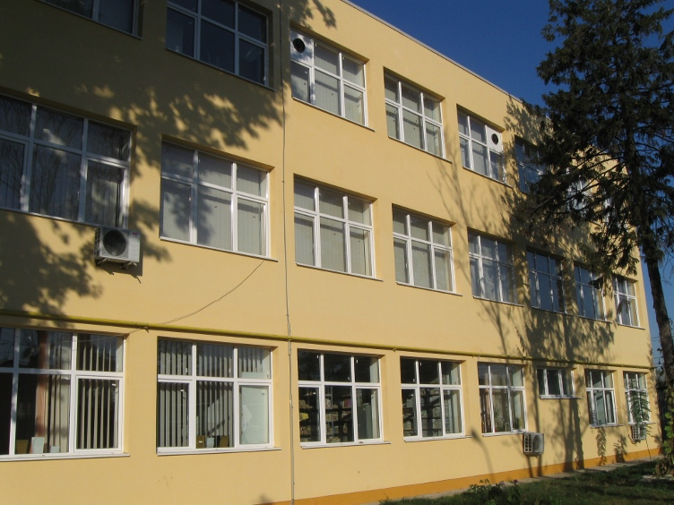

class: center, middle, inverse # Şcoala gimnazială nr.40  .red[înscrie] bobocii pe care îi va "număra" la toamnă... --- class: center, middle, inverse # Înscrierea în clasa pregătitoare 2018-2019 #<a href="https://www.edu.ro/%C3%AEnscrierea-%C3%AEn-%C3%AEnv%C4%83%C8%9B%C4%83m%C3%A2ntul-primar-2018-2019">întrebări frecvente</a> Informaţii despre condiţii, criterii, străzi arondate, program: ziua porţilor deschise, evaluare, înscriere. --- class: split-50 nopadding bkgpos_00 background-image: url(images/map.png) .column_t2[.vmiddle.xkcd_font.pushfront.center[ #.red[Agenda] 1. Străzi arondate 2. Planul de şcolarizare 3. Evaluarea psihosomatică 4. Programul de înscriere 5. Acte necesare ]] .column_t2[.vmiddle[ ]] --- class: split-50 nopadding bkgpos_00 .column_t2[.vmiddle.pushfront.center[ # Străzi arondate INTR. CUMPENEI NR. pare şi impare SOS. ANDRONACHE NR. 58-70 (NR. PARE),72-254 (NR. pare şi impare) STR. BAROMETRULUI NR. pare şi impare STR. BETONULUI NR. pare şi impare STR. CALMATUI NR. pare şi impare STR. CANEPEI NR. pare şi impare STR. CIBERNETICII NR. pare şi impare STR. COACAZELOR NR. pare şi impare STR. CONSTANTIN GHEATA NR. pare şi impare ]] .column_t2[ STR. CORNISEI NR. pare şi impare STR. CPT. GHEORGHE ROVENTA NR. pare şi impare STR. CUIULUI NR. pare şi impare STR. CUMPENEI NR. pare şi impare STR. EROU BOGORIN CONSTANTIN NR. pare şi impare STR. EROU ION FLORUTA NR. pare şi impare STR. EROU ION SCORTAN NR. pare şi impare STR. EROU MIHAIL CAZACU NR. pare şi impare STR. ESCALEI NR. pare şi impare STR. EXISTENTEI NR. pare şi impare STR. FALTICENI NR. pare şi impare STR. FRUCTELOR NR. pare şi impare] --- class: split-50 nopadding bkgpos_00 .column_t2[.vmiddle[ STR. GALES NR. pare şi impare STR. GALITA NR. pare şi impare STR. GATAIA NR. pare şi impare STR. GATERULUI NR. pare şi impare STR. GURENI NR. pare şi impare STR. ILGANI NR. pare şi impare STR. IZVORUL MUNTELUI NR. pare şi impare STR. LACUL IANCA NR. pare şi impare STR. LECTURII NR. pare şi impare STR. LT. PETRE NEGULESCU NR. pare şi impare STR. MAGNEZIULUI NR. pare şi impare STR. MEDALIEI NR. pare şi impare STR. MENTIUNII NR. pare şi impare ]] .column_t2[.vmiddle[ STR. OVAZULUI NR. pare şi impare STR. PERIS NR. pare şi impare STR. PIETROASA NR. pare şi impare STR. PORTILE DE FIER NR. pare şi impare STR. ROPOTULUI NR. pare şi impare STR. SERG. ION TEODORESCU NR. pare şi impare STR. SERII NR. pare şi impare STR. STEFAN CIUCA NR. pare şi impare STR. SUHARD NR. pare şi impare STR. TESATOARELOR NR. pare şi impare STR. TURISTILOR NR. pare şi impare STR. TUSNAD NR. pare şi impare ]] --- class: center, middle, inverse # Criteriile specifice de departejare, le găsiţi <a href="images/criterii-oops.pdf">aici</a>. --- class: center, middle # PLANUL DE ȘCOLARIZARE AN ȘCOLAR 2018-2019 CLASA PREGĂTITOARE ÎNVĂȚĂMÂNT DE MASĂ Număr de clase propuse: 2, cu un număr maxim de 50 de locuri. #.red[Ziua porţilor deschise:] 7 martie 2018, între orele 12.00-18.00. .blue[Responsabil cu îndrumarea:] BRATOSIN CARLA ALINA - PROFESOR INVATAMANT PRIMAR Numărul de telefon telverde al comisiei municipale de înscriere de la care puteţi obţine informații suplimentare – .blue[0800.816.021], va fi disponibil în perioada .blue[01.03.2018 – 04.05.2018], de luni până joi în intervalul orar 8.00-16.30 și vineri în intervalul orar 8.00-14.00. --- class: middle, center # EVALUAREA PSIHOSOMATICĂ: (şi toate informaţiile necesare, locaţie, telefoane, etc) <a href="http://www.cmbrae.ro/2017/psihosomatica-2018/"><span style="color: #0000ff;">Centrul Municipiului București de Resurse și Asistență Educațională</span></a> .red[Acte necesare la prezentarea pentru evaluare psihosomatica:] Certificatul de naştere al copilului – original şi copie; Adeverinţa de la medicul de familie/pediatru cu mentiunea “apt pentru scoala”; Act de identitate (C.I. / B.I.) al părintelui/tutorelui legal insotitor. Preşcolarii din unităţile de învăţământ de stat cu nivel preşcolar care, din diferite motive, nu sunt prezenti la gradinita in ziua anuntata pentru evaluarea psihosomatica, sau cei neînscrişi la grădiniţa şcolii, sau cu cerinte educationale speciale (CES), vor realiza această activitate la sediul CMBRAE pe baza unei programări (str. Heliade intre vii nr. 36, sector 2, in incinta Şcolii Gimnaziale nr. 145, etajul II,tel- 021/2323071, 0318053190). --- class: split-50 nopadding bkgpos_00 .column_t2[.vmiddle.pushfront.center[ Preşcolarii înscrişi la grădiniţa şcolii noastre, cu vârsta între .red[5 ani, 4 luni şi 5 ani, 11 luni, până la data de 31 august 2018 inclusiv] vor fi evaluaţi, la #.red[Şcoala gimnazială nr. 40] în data de .red[luni 18 martie 2018], în intervalul orar .red[10.00-14.00]. ]] .column_t2[.vmiddle[ ]] --- class: center, middle # .red[PROGRAM ÎNSCRIERE:] Prima etapă: 8 - 26 martie A doua etapă: 12 - 18 aprilie #LUNI- VINERI : .blue[8,00-18,00] Înscriere online: https://inscriere.edu.ro/ Informatii suplimentare despre înscriere: Şcoala Gimnazială nr. 40- TEL- 021/2406545 Inspectoratul Şcolar al Municipiului Bucuresti: <a href="http://ismb.edu.ro/index.php/inscriere-invatamantul-primar-2013/632-inscrierea-in-invatamantul-primar-2015"><span style="color: #0000ff;">Metodologie, calendar, precizări, planificare</span></a> sau http://ismb.edu.ro/ --- class: middle # ACTE NECESARE PENTRU ÎNSCRIEREA ÎN ÎNVĂȚĂMÂNTUL PRIMAR AN ŞCOLAR 2018-2019 CERTIFICATUL DE NAȘTERE AL COPILULUI (COPIE ȘI ORIGINAL PENTRU CONFRUNTARE) ACTE DE IDENTITATE ALE PĂRINȚILOR / TUTORILOR (COPIE ȘI ORIGINAL PENTRU CONFRUNTARE) ADEVERINȚĂ MEDICALA (in conformitate cu O.M.S. 1002 / OMECS 5057/ 2015) DE LA MEDICUL DE FAMILIE CARE VA CONȚINE ȘI AVIZUL “ APT INSCRIERE SCOALA” COPIE HOTARÂRE DIVORȚ / ÎNCREDINȚARE MINOR/ DECIZIE DGASPC, (DUPĂ CAZ) RECOMANDAREA PRIVIND INSCRIEREA - IN URMA EVALUARII PSIHOSOMATICE ( pt. copiii care împlinesc 6 ani dupa data de 01.09.2018) DOCUMENTELE NECESARE ÎNSCRIERII SE DEPUN ÎNTR-O FOLIE DE PROTECȚIE DIN PLASTIC --- class: middle, center, inverse Dacă aţi ajuns aici, folosind telefonul şi nu v-aţi lămurit, puteţi încerca o versiune pentru acesta, #.red[<a href="infocp2018.html"><span style="color: #0000ff;">aici</span></a>] Altfel, mai există un slide... --- class: split-50 nopadding bkgpos_00, inverse .column_t2[.vmiddle.pushfront.center[ Gazda dumneavoastră prezentatoare şi echipa ce a adunat, pregătit, prelucrat şi validat aceste informaţii, vă doresc # Succes! ]] .column_t2[.vmiddle[ .pushfont.right[C. Rebel] ]]